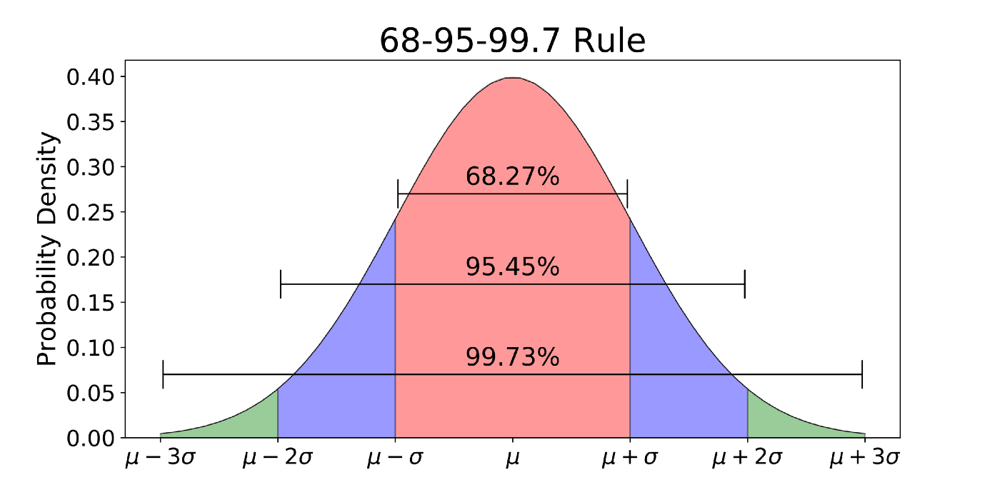

Probability & Statistics
Contents
Probability & Statistics#
Clicking on a question in the list below will take you to the solution, clicking on the question header will bring you back to this list of questions.
Contributing Have ideas for more questions? See the contributing section.
Questions
-
What are the relationships between pdfs and cdfs? What properties do they have?
What is the binomial distribution? What are its parameters, mean, and variance?
What is the Poisson distribution? What are its parameters, mean, and variance?
What is the Uniform distribution? What are its parameters, mean, and variance?
What is the Geometric distribution? What are its parameters, mean, and variance?
What is the Exponential distribution? What are its parameters, mean, and variance?
What is the Normal distribution? What are its parameters, mean, and variance?
What is covariance? What about the correlation \(\rho\) between \(X\) and \(Y\)?
-
If you roll 3 dice in order, what is the probability that the values will be strictly decreasing?
What is the probability that a seven-game series goes to 7 games?
What is the expected number of rolls needed to see all 6 sides of a fair die? TODO
How many cards would you expect to draw from a standard deck before seeing the first ace? TODO
Let \(X,Y\sim N(0,1)\) be independent Gaussians, what is \(P(2X>Y)\)?
-
Derive the expected value for the uniform distribution \([a,b]\).
How would you explain a confidence interval to a non-technical audience? TODO
How would you derive a confidence interval from a series of coin tosses? TODO
You sample from a uniform distribution \([0, d]\) \(n\) times. What is your best estimate of \(d\)?
Derive the expectation for a geometric distributed random variable.
What is a \(z\)-test? What is a \(t\)-test? When would you use each? TODO
Let \(X,Y\sim U(0,1)\) be independent, what is the expected value of \(\max(X,Y)\)? TODO
Warm-Ups#
What is the mean of a random variable? How is it computed?#
The expected value, \(\mathbb{E}(X)\) is the mean, for a discrete variable,
and for continuous variables
What is the variance of a random variable?#
The variance is a measure of spread of a random variable, defined as
where \(\mu_X\) is the mean of \(X\).
When and how do expected value and variance add? The is, what is \(\mathbb{E}(aX+bY)\) and \(\text{Var}(aX+bY)\)?#
Expectation is always linear, that is \(\mathbb{E}(aX+bY) = a\mathbb{E}(X)+b\mathbb{Y}\).
Variance only adds when variables are independent, and scalar come out with squared since
so if \(X\) and \(Y\) are independent,
A counterexample for the additivity of variance when the variables are dependent is \(Y=-X\), then \(\text{Var}(X+Y) = \text{Var}(0)=0\neq 2\text{Var}(X)\) for any non-constant \(X\).
What is Bayes Rule?#
Bayes Rules: For two events \(A\) and \(B\),
What does it mean for two events to independent?#
\(A,B\) are independent \(\iff\) \(P(A\text{ and }B) = P(A)P(B)\)
What is the Law of Total Probability?#
Given a collection of disjoint events, \(B_1,\ldots, B_n\) with \(B_1\sqcup \cdots \sqcup B_n\) covering the entire sample space,
What is a probability mass function (pmf)? probability density function (pdf)? Cumulative distribution function (cdf)?#
For a discrete random variable \(X\), the probability mass function is
For a continuous random variable, \(\mathbb{P}(X=a)=0\), so we define the continuous analog, the probability density function such that
The cumulative distribution function, defined for both continuous and discrete R.V.s, is
What are the relationships between pdfs and cdfs? What properties do they have?#
Given a pdf \(p\) and a cdf \(F\),
Some properties of pdfs:
\(p(x) \geq 0\) for all \(x\)
\(p(x)\) may be greater than \(1\) (unlike a pmf)
\(\int_{-\infty}^\infty p(x)dx=1\)
Some properties of cdfs:
\(F(x)\in [0,1]\) with \(\lim_{x\rightarrow \infty}F(x) = 1\) and \(\lim_{x\rightarrow -\infty}F(x) = 0\)
\(F\) is monotonically increasing
\(F\) is continuous from the right (but not necessarily the left)
What is a Bernoulli Trial? What is its mean and variance?#
A Bernoulli trial is a single experiment with a “success” outcome occuring with probability \(p\) (ex: coin flip).
The mean is given by
The variance is
What is the binomial distribution? What are its parameters, mean, and variance?#
Given \(n\) Bernoulli trials, let \(X\) be the number of successes that occured, then \(X\) has a binomial distribution, \(X\sim Binom(n,p)\).
This is a discrete distribution, with probability mass function $\(P(X=k) = {n \choose k} p^{k}(1-p)^{n-k}.\)$
where \({n \choose k}=\frac{n!}{k!(n-k)!}\) is the binomial coeffient.
The expected value is the sum of the expected value for each Bernoulli trial, which is \(p\), so \(\mathbb{E}(X)=np\). Similarly, given the indepedence of the trials, the variance is \(\text{Var}(X) = np(1-p)\).
What is the Poisson distribution? What are its parameters, mean, and variance?#
Given random events happening at a known average rate, the Poisson distribution model the probability of a given number of these random events occuring in a fixed interval (usually time). If \(\lambda>0\) is the average number of events occuring in the time period, and \(X\) is the number of these events occuring in an interval,
Both the mean and variance of \(X\) is \(\lambda\).
What is the Uniform distribution? What are its parameters, mean, and variance?#
For a discrete uniform variable on a set \(\{x_1,\ldots, x_n\}\), it has probability \(1/n\) of taking on each \(x_i\).
For a continuous uniform variable, \(U(a,b)\), it has a constant probability density function on the interval \([a,b]\), making all values “equally likely”. In particular, \(p(x) = \frac{1}{b-a}\) on \([a,b]\) and is 0 outside the interval.
The mean is the average of the end points, \(\frac{a+b}{2}\) and the variance is \(\frac{1}{12}(b-a)^2\) (derived from the integral \(\int_a^b \left(x-\frac{a+b}{2}\right)^2\frac{1}{b-a}dx \)).
What is the Geometric distribution? What are its parameters, mean, and variance?#
Given a sequence of repeated Bernoulli trials with probablity \(p\), the geometric distribution models the number of trials needed to get the first success. Let \(X\) be the number of attempts until a success, then \(\mathbb{P}(X) = (1-p)^{k-1}p\) for \(k\geq 1\). The mean is \(\mathbb{E}(X) = 1/p\), via the following derivation,
And the variance is \(\text{Var}(X) = \frac{1-p}{p^2}\).
What is the Exponential distribution? What are its parameters, mean, and variance?#
The exponential distribution is the probability distribution of the time between events in a Poisson point process, a process where events with fixed average rate occur independently. It is analagous to the geometric distribution (discrete).
PDF: \(f(x)=\lambda e^{-\lambda x}\), CDF: \(F(x) = 1-e^{-\lambda x}\). Both for \(x\geq 0\) and \(0\) when \(x<0\),
It has mean \(\frac{1}{\lambda}\), with variance \(\frac{1}{\lambda^2}\). The former is from the integration of \(\int_0^\infty x\lambda e^{-\lambda x}dx\) using integration of parts. Integrating \(\int_0^\infty x^2\lambda e^{-\lambda x}dx\) by parts twice gives the variance.
What is the Normal distribution? What are its parameters, mean, and variance?#
The Normal, or Gaussian, Distribution has the bell curve probability density function, with the highest probability closest to the mean, and lower probabilities farther and farther from the center. With a mean \(\mu\) and variance \(\sigma^2\),
PDF \(f(x) = \frac{1}{\sigma\sqrt{2\pi}} \exp(\frac{-(x-\mu)^2}{2\sigma^2})\)
the CDF is expressed in terms on the integral.

What is covariance? What about the correlation \(\rho\) between \(X\) and \(Y\)?#
Covariance is a measure of how two distributions vary with respect to each other. It is defined as:
When \(X=Y\), this is the variance of \(X\). When \(X,Y\) are independent, \(\mathbb{E}[XY]=\mathbb{E}[X]\mathbb{E}[Y]\) so the covariance is 0.
The magnitude of covariance depends on the units of \(X\) and of \(Y\), to normalize this measure of the relationship, we define the correlation
where \(\sigma_Z = \sqrt{\text{Var}(Z)}\)
What is the Law of Large Numbers?#
**Law of Larger Numbers:**Let \(X_i\) be i.i.d. random variables, then the sample mean converges to the true mean, i.e. $\( \lim_{n\rightarrow \infty} \frac{1}{n}\sum_{k=1}^n X_k = \mathbb{E}[X]\)$
Note that the variance for \(X_i\) need not be finite, although finite variance will converge faster.
State the Central Limit Theorem.#
The central limit theorem says that as a sample of i.i.d. variables with finite mean and variance gets large, the sample mean approaches a normally distributed random variable. Crucially, this holds regardless of the distribution of the \(X_i\)s. Formally,
Central Limit Theorem: Let \(X_1,X_2,\ldots\) be i.i.d. with \(\mathbb{E}[X_i] = \mu\) and \(\text{Var}[X] = \sigma^2<\infty\). Let \(\bar{X}_n =\frac{1}{n}(X_1+\cdots + X_n)\) be the sample mean, then as \(n\rightarrow \infty\), we have \(\bar{X}_n\rightarrow N(\mu, \frac{\sigma^2}{n})\).
What are Type I and Type II errors? How do they relate to the significance level \(\alpha\) and the power level \(\beta\)?#
Type I the probability of a false positive, that is the probability that we reject a null hypothesis that is true.
Type II the probability of a false negative, that is the probability that we fail to reject a null hypothesis which is false.
The significance level, \(\alpha\), is the probability, \(P(\text{Type I})\). For example, if \(\alpha =0.05\), then the test has a 5% chance of a false positive.
The power level, \(\beta\), is the probability of correctly rejecting a false null hypothesis, so \(P(\text{Type II}) = 1-\beta\).
Probability#
If you roll 3 dice in order, what is the probability that the values will be strictly decreasing?#
There are \(6^3\) possible rolls, all of which are equally likely. We can count the number of rolls that are strictly descreasing to get their probability.
If the first roll is a 1 or 2, the sequence cannot be strictly decreasing.
If the first roll is a 3, there is exactly 1 strictly decreasing sequence.
If the first roll is a 4, there are 3 decreasing sequences (4-3-2, 4-3-1, 4-2-1).
If the first roll is a 5, there are 6 decreasing sequences (5-4-3/2/1, 5-3-2/1, 5-2-1)
If the first roll is a 6, there are 10 decreasing sequences (6-5-4/3/2/1, 6-4-3/2/1, 6-3-2/1. 6-2-1).
Adding these possibilities up, there are 10+6+3+1 = 20 strictly decreasing rolls possible, so the probability that rolling 3 dice in order will produce one of these sequences is \(20/6^3\).
A general patten can be derived. Let \(k\) be the number of rolls and let \(n\) be the maximum allowed value of any roll, define \(X(k,n)\) be the number of strictly decreasing rolls possible. The problem asks for \(X(3,6)\). This quanitity satisfies a recursive relation:
since after the first roll (which could be \(1,2,\ldots, n\)), there are \(k-1\) rolls remaining, all of which must be less than the first roll value. Some base cases are \(X(1,n)=n\), \(X(k,1)=0\) if \(k>1\), and \(X(0,n) = 0\). Using this formulation,
A disease screening test has a 95% accuracy for detecting the disease, and a 2% false positive rate. The odds that a person has the disease are 1%. If a person tests positive, what are the odds they have the disease?#
This is a classic application of Bayes Theorem
Let \(A\) be the event that the patient has the disease, let \(B\) be the event that they test positive. Then \(P(A) = 0.01\), and \(P(B|A) = 0.95\). To compute \(P(B)\), we split into cases $\(P(B) = P(B|A)P(A) + P(B|A^C)P(A^C) = 0.95*0.01 + 0.02*0.99.\)$
Plugging in,
What is the probability that a seven-game series goes to 7 games?#
First, let’s make some simplifying (if slightly inaccurate) assumptions. Let each game be independent, with \(p_A\) the probability that Team A wins a game. Then the series will go to 7 games if during the first 6 games each team wins 3 games.
This is a binomial distribution \(X\sim Binom(p_A,6)\) so the probability that the series goes to a seventh game is \(P(X=3)={6 \choose 3} p_A^3 (1-p_A)^3\).
Say you draw a circle and choose two chords at random. What is the probability that those chords will intersect?#
Any collection of 4 points, A, B, C, and D, is equally likely to be selected, and given those points the three chord arrangements, AB/CD, AC/BD, and AD/CB, are also equally likely. Only the configuration will result in crossing chords, so there is a 1/3 chance of the random chords intersecting.
There are 50 cards of 5 different colors. Each color has cards numbered between 1 to 10. You pick 2 cards at random. What is the probability that they are not of same color and also not of same number?#
There are \(50*49\) possible pairs of cards. Fixing the first card of a pair, there are 9 remaining cards of the same color, and 4 remaining cards of the same value among the 49 cards remaining. So there are \(49-9-4=36\) cards that would give a pair satisfying the conditions. The probability is then \(36/49\).
What is the expected number of rolls needed to see all 6 sides of a fair die? TODO#
Attempt 1
Could model the probability of not all 6 for each roll and sum. (Caution: be careful of double counting)
Given \(n\geq 6\) rolls, the odds that all 6 faces are seen is the complement of the odds that not all faces are seen. Need some expression for this that we can sum over.
Three friends in Seattle each told you it’s rainy, and each person has a 1/3 probability of lying. What is the probability that Seattle is rainy? Assume the probability of rain on any given day in Seattle is 0.25.#
This is an application of Bayes Theorem.
Let \(A\) be the event that it is rainy in Seattle, and let \(B\) be the event that all three friends say it’s rainy. Then \(P(B|A) = (2/3)^3\) since each friend must tell the truth (we assume the friends decisions to lie are independent). The probability \(P(A)=0.25\) is given. To compute \(P(B)\) we split into cases whether it’s rainy or not,
Plugging into Bayes Theorem,
Source: Ace the Data Science Interview
Three ants are sitting at the corners of an equilateral triangle. Each ant randomly picks a direction and starts moving along the edge of the triangle. What is the probability that none of the ants collide? Now, what if it is \(k\) ants on all \(k\) corners of an equilateral polygon?#
In order for none of the ants to collide, they must all go clockwise or all go counter-clockwise around the triangle. Thus there are 2 non-collision outcomes. Overall, there are \(2^3\) outcomes, since each of the 3 ants could go 1 of 2 ways. All outcomes are equally likely, so the probability of no collisions is \(2/2^3 = 2^{-2}\).
In the more general case, there are still only 2 non-collision outcomes, but the total number of outcomes is \(2^k\) since there are \(k\) ants each making a binary choice. The probability of no collision now is \(2/2^k=2^{-(k-1)}\). Intuitively, this makes sense since the odds of collision should increase as there are more ants and more possible collisions.
Source: Ace the Data Science Interview
How many cards would you expect to draw from a standard deck before seeing the first ace? TODO#
Say you are given an unfair coin, with an unknown bias towards heads or tails. How can you generate fair odds using this coin?#
This is a clever trick. Let \(p\) be the probability of heads. \(P(HT) = p(1-p)\) and \(P(TH) = (1-p)p\) so these events have equal probability. Let a trial be two coin flips. Define the trial to be heads if the result is HT and tails if the result is TH. If the result is HH or TT, repeat the trail. Now the two events are equally likely.
A fair die is rolled \(n\) times. What is the probability that the largest number rolled is \(r\), for each \(r\) in \(1,\ldots,6\)? TODO#
Let \(X,Y\sim N(0,1)\) be independent Gaussians, what is \(P(2X>Y)\)?#
First, rewrite this as \(P(2X-Y>0)\). Since independent Gaussians add \(N(\mu_x,\sigma_x^2)+N(\mu_y,\sigma_Y^2) = N(\mu_X+\mu_Y,\sigma_X^2+\sigma_Y^2)\), define \(Z=2X+Y + 2N(0,1)+N(0,1)= N(0,4)+N(0,1) = N(0,5)\). Now we want \(P(Z>0)\), and since \(Z\) is Gaussian with mean 0, this has probability 1/2.
There are two groups of \(n\) users, A and B, and each user in A is friends with those in B and vice versa. Each user in A will randomly choose a user in B as their best friend and each user in B will randomly choose a user in A as their best friend. If two people have chosen each other, they are mutual best friends. What is the probability that there will be no mutual best friendships? TODO#
Statistics#
Derive the expected value for the uniform distribution \([a,b]\).#
Intuition tells us that it should be the midpoint, \(\frac{b+a}{2}\).
The probability density function for this distribution is \(\frac{1}{b-a}\) on the interval \([a,b]\) and 0 everywhere else. The expected value for the distribution is the value of the integral
What is the Central Limit Theorem? Why is it useful? TODO#
How would you explain a confidence interval to a non-technical audience? TODO#
Describe p-values in layman’s terms. TODO#
Describe A/B testing. What are some common pitfalls? TODO#
How would you derive a confidence interval from a series of coin tosses? TODO#
You sample from a uniform distribution \([0, d]\) \(n\) times. What is your best estimate of \(d\)?#
Maximum likelihood estimation.
Given \(d\) and sample points \(X_1,\ldots, X_n\), the probability of randomly drawing this collection of points would be \((\tfrac{1}{d})^n\) for \(d\geq \max(X_i)\) and probability 0 if \(d<\max(X_i)\). Thus the maximum likelihood estimate for \(d\) is \(\max(X_i)\).
You are drawing from a normally distributed random variable \(X \sim N(0, 1)\) once a day. What is the approximate expected number of days until you get a value of more than 2?#
This is a geometric distribution. We need to compute the probability \(p = P(X>2)\). Since \(X\sim N(0,1)\), there is approximately a 95% chance that \(X\) lies within 2 standard deviations, that is \(|X|<2\). This means \(P(|X|>2) = 0.05\) and since the distribution is symmetric about 0, \(P(X>2) = 0.025\).
Now each trial has probability \(p=0.025\) of success, and we want to know how many trials we need to get our first success. The expected value for this is \(1/p = 1/0.025 = 40\).
Derive the expectation for a geometric distributed random variable.#
Let \(X\) be a geometric random variable with parameter \(p\). Then \(P(X=k) = (1-p)^{k-1} p\). The expectation of \(X\) is
Given a random Bernoulli trial generator, how do you return a value sampled from a normal distribution. TODO#
What is MLE? What about MAP? How do they compare?#
MLE, or Maximum Likelihood Estimation, is a means of estimating a parameter of a distribution. Let \(D(p)\) be a distribution with parameter \(p\), from which we have sampled points \(X_1,\ldots, X_n\). Then using the distribution, we can compute a likelihood function \(\mathcal{L}(p;X_1,\ldots, X_n)\) that is the probability of drawing this sample which depends on the parameter \(p\). If the distribution is continuous, the probability would be 0, so \(\mathcal{L}\) instead captures the density function evaluated for this sample. Then we take that estimator that maximizes this function,
In practice, we often define the log-likelihood function \(\ell(p;X_1,\ldots, X_n) = \log(\mathcal{L}(p;X_1,\ldots, X_n))\) since the maximizing value for \(p\) is the same for \(\ell\) and \(\mathcal{L}\) since logs preserve order, and for independent samples the likelihood function will be a product of terms that turn into sums after the log function.
MAP, or maximum a posteriori, is another way of estimating a distribution parameter but where we assume that some parameter values are more likely than others. In other words, the parameter itself comes from a distribution, \(P\). Similar to MLE, we derive a (log)-likelihood function \(\ell\) or \(\mathcal{L}\), but now we weight this likelihood of the sample, by the likelihood of the parameter. The result is that
Explain hypothesis testing. TODO#
What is a \(z\)-test? What is a \(t\)-test? When would you use each? TODO#
Suppose you draw \(n\) samples from a uniform distribution, \(U(a,b)\). What are the MLE estimates of \(a\) and \(b\)?#
First, we define the likelihood function \(\mathcal{L}(a,b;X_1,\ldots, X_n) = \prod_{i=1}^n f(X_i| a,b)\) where \(f(X_i|a,b)\) is the density function at \(X_i\) given the parameters \(a,b\). If \(X_i \notin [a,b]\) then this is zero, otherwise it is \(\frac{1}{b-a}\). Plugging this in to the likelihood function then gives
Since this gets smaller the larger \(|b-a|\) becomes, the smallest interval possible will maximize the likelihood, and so \(\hat{a}_{MLE} = \min(X_i)\) and \(\hat{b}_{MLE} = \max(X_i)\).